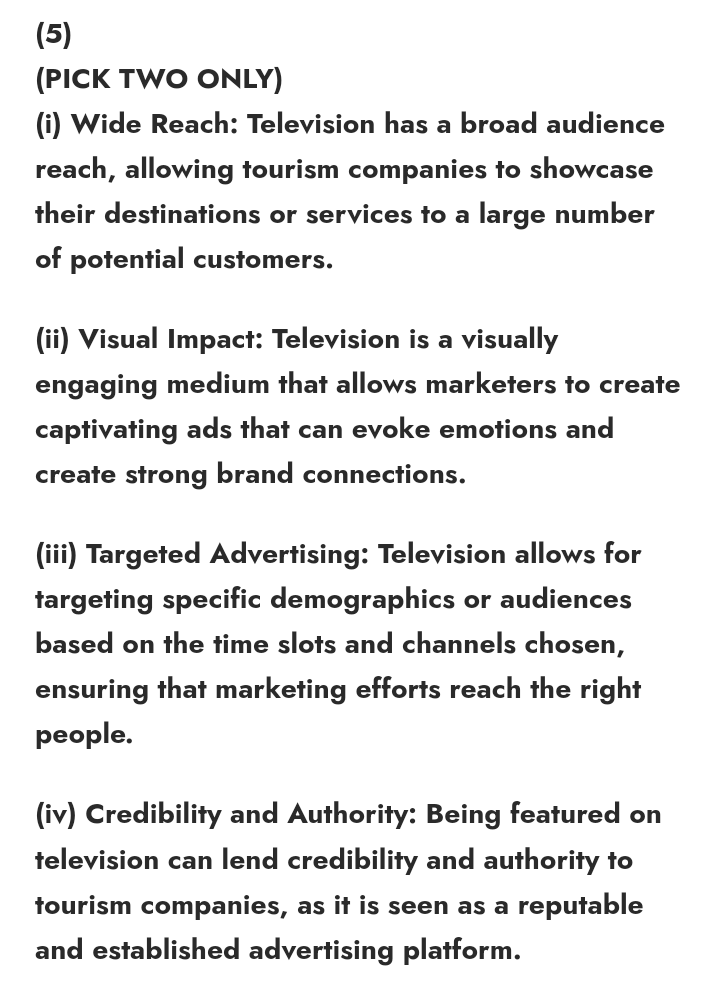
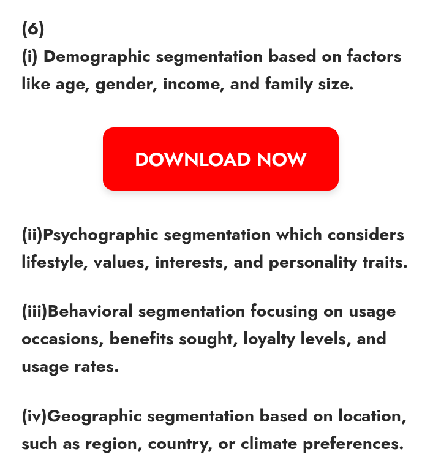
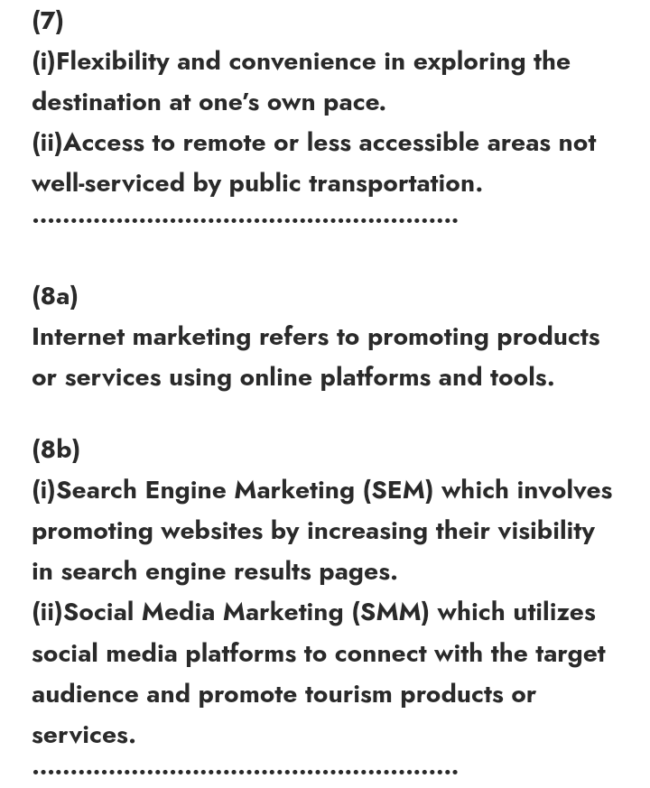
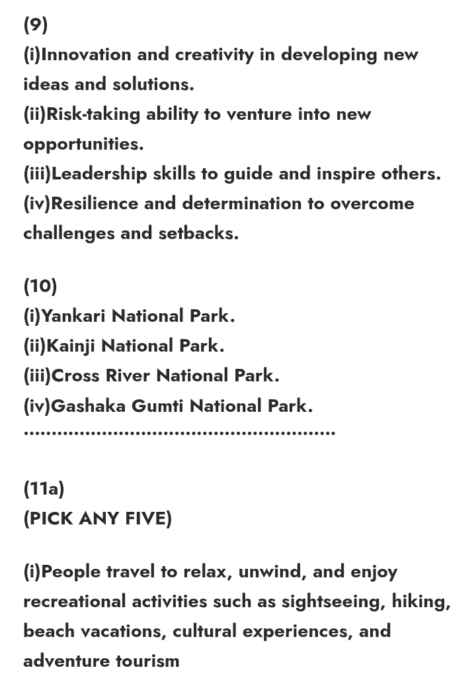
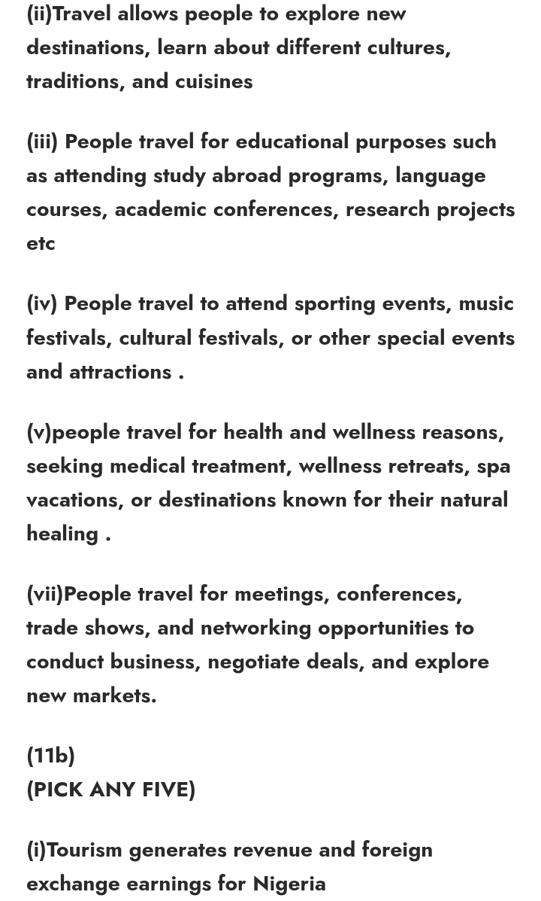
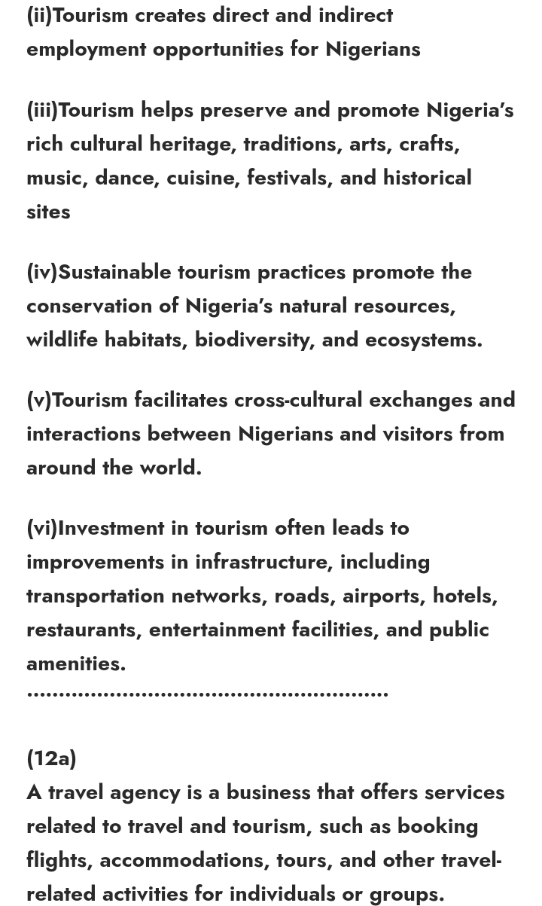
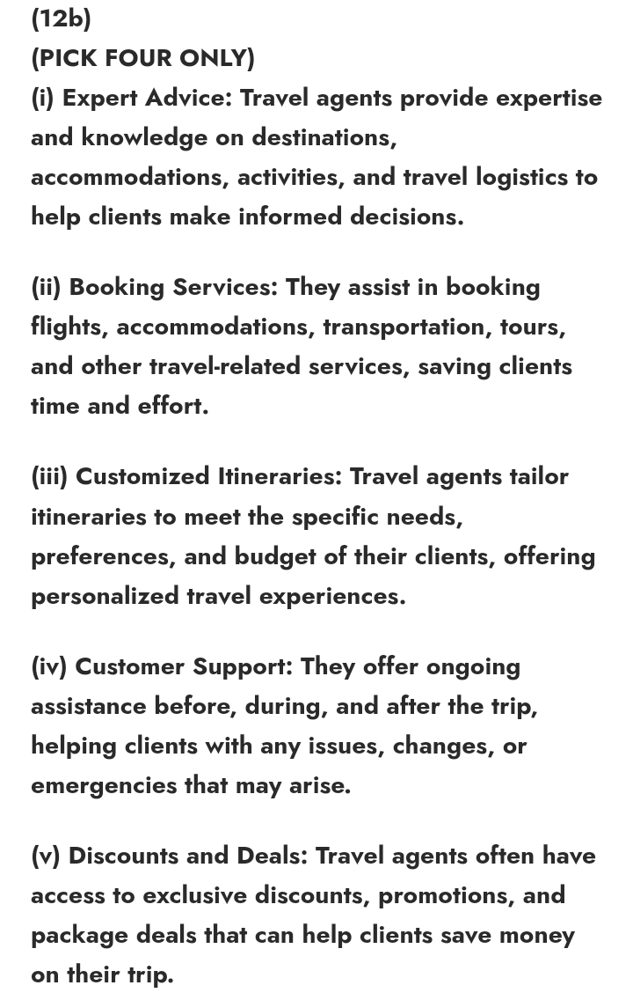
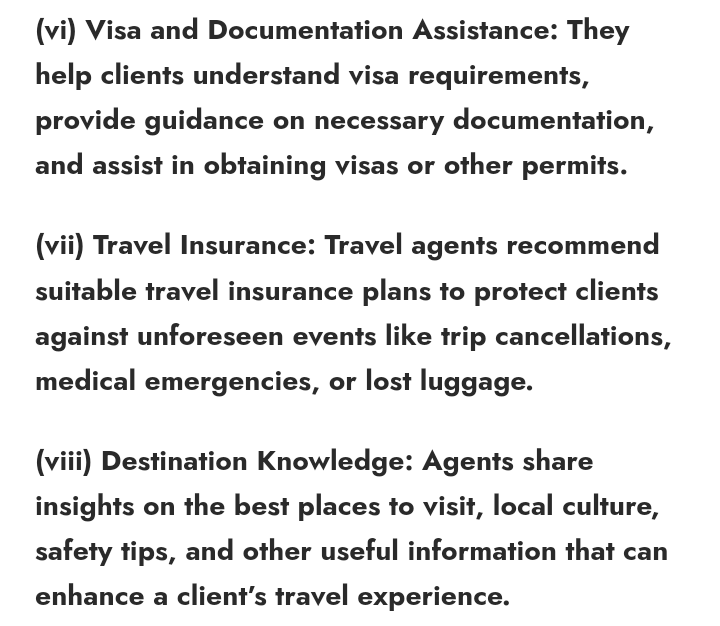

WAEC 2024 Tourism (ESSAY & OBJ) ANSWERS – DEERUNZ
TOURISM-OBJ
Answers loading….
•••••••••••••••••••••••••••••••••••••••••••••••••••••
TOURISM-ESSAY-ANSWERS
(1)
(PICK TWO ONLY)
(i) Beaches – Elegushi Beach
(ii) National Parks – Yankari National Park
(iii) Cultural Sites – Osun-Osogbo Sacred Grove
(iv) Waterfalls – Erin Ijesha Waterfall
(v) Historical Sites – Kano City Walls •••••••••••••••••••••••••••••••••••••••••••••••••••••••••
(2)
(PICK TWO ONLY)
(i) Location
(ii) Price
(iii) Amenities
(iv) Reviews
(v) Accessibility
(vi) Safety and security
•••••••••••••••••••••••••••••••••••••••••••••••••••••••••
(3a)
Expenditure pattern refers to the
way in which individuals, households, businesses, or governments
allocate their financial resources towards various
goods and services over a specific period of time.
(3b)
(PICK TWO ONLY)
(i) Transportation
(ii) Accommodation
(iii) Attractions
4(a)
(PICK FOUR ONLY)
(i) Travel magazines
(ii) Newspapers
(iii) Brochures
(iv) Direct mail
(v) In-flight magazines
(vi) Tourism guides
(vii) Event programs
       
DUSTED!!! <>